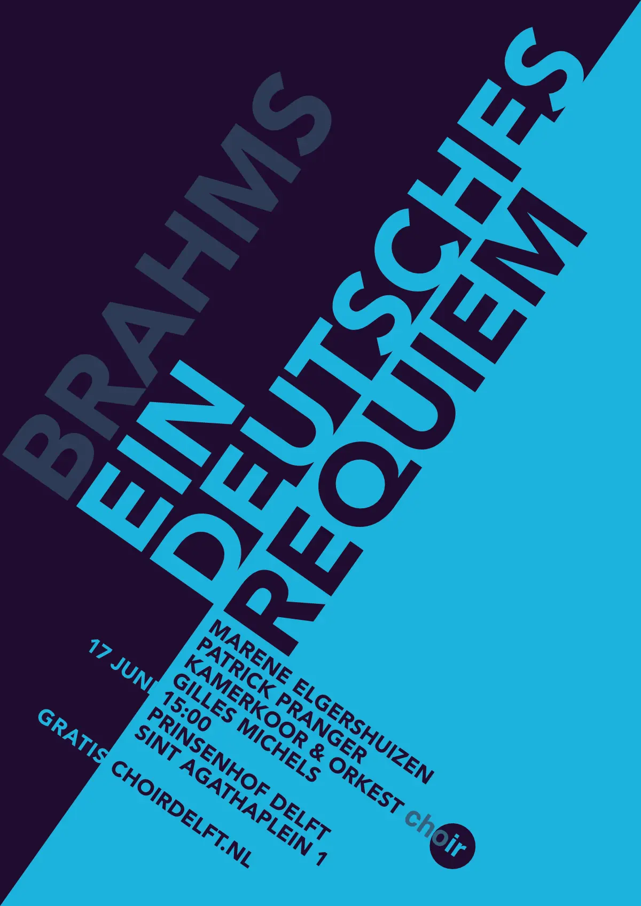

Below is a poster for the performance of Ein Deutsches Requiem by the Dutch chamber choir and orchestra “choir” designed by Bart Van Lieshout. The choir’s logo is set in Suisse Int’l, and the rest of the text is typeset in Avenir Black (Van Lieshout). The bold weight clearly separates the text from the background. The Avenir texts are all uppercase and set along two diagonal axes; thus, the content looks more dynamic. The uniformity of Avenir reinforces the axes and geometric feel. The typographic hierarchy is established through the font sizes and colors.
The title of the concert and the name of the composer are the largest texts on the poster. The hierarchy in this section is established through the colors, as the words have the same size. The first half of the title, “Ein Deutsches”, is light blue on a dark blue background, while the second half, “Requiem”, is the opposite. The composer’s name is a dark color, signifying that this information is less important. The words are left-aligned to the top of the next section. The word “Deutsches” is set right on the primary diagonal axis, softening the barrier between the light and dark backgrounds. Because it is not attached to the dark background, the word “Requiem” seems to have its own space and stand out more.

The information on the performance is brief and straightforward. The top of this section aligns with the line created by the title and composer’s name. It is left-aligned to the primary diagonal axis. The logo is set differently from the other texts. Although there is no title, the information is still divided into three groups: notable performers; the time, date, and location of the performance; and, possibly, where to get the ticket. The texts “17 Juni” and “Gratis” are set outside the main column and in light blue on a dark background; this makes the division clear. The main column is set in dark texts on a light background. The last line is spaced out from the others, indicating that this information has a different significance.